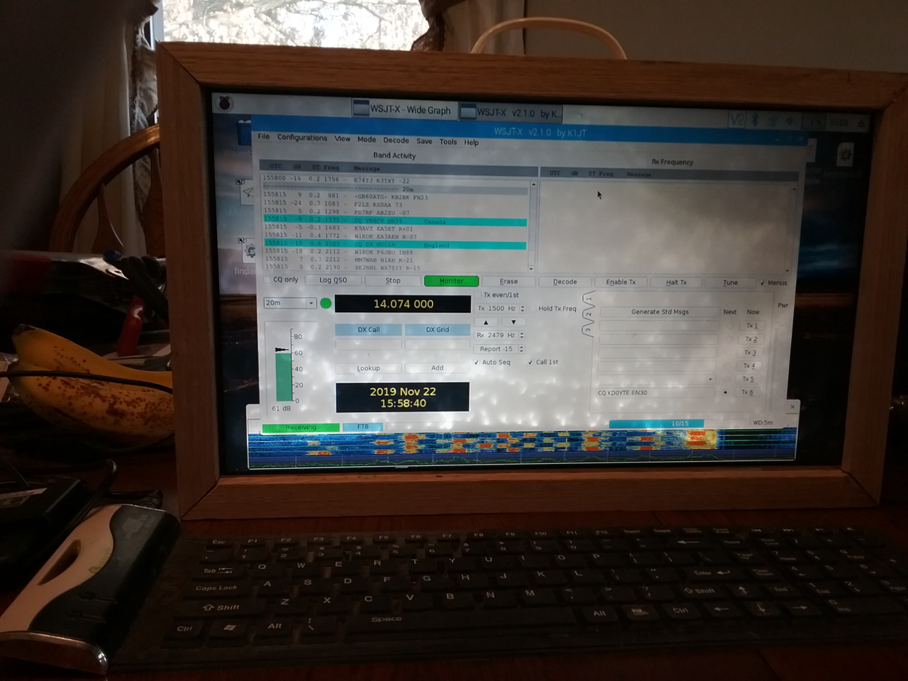

Introducing the Ham Pi
By KD0YTE
While fruit pies are all the rage sometimes you want something meaty...
Oh Wait! maybe that's the wrong pies. This is about a raspberry pi computer setup for ham use.

The ham pi running ft8 with my rs918 qrp radio
What is the ham pi?
Think of the ham pi as a computer for controlling an HF or VHF amateur radio. In addition the pi provides remote connectivity to your radio for running digital modes.
I started with a raspberry pi 3 b+ running a stock version of raspbian.
using km4ack's excellent raspberry pi 4 build notes I installed the following packages.
- vnc-server
- km4ack's hotspot scripts
- gpsd and chronyd to set time using gps
- flrig for HF radio control
- Pat winlink for hf packet e-mail
- ardop hf modem to use with winlink
- hamlib rig control libraries
- Direwolf for vhf packet
- Wsjt-x for ft8, wspr, and other weak signal digital modes
- JS8Call for weak signal hf qso's and messaging
- fldigi for many other popular digital modes
Sourcing a cheap lcd screen for the ham pi
With VNC-Server I was able to connect to the pi running headless and control it using my laptop and tablet.
However I wanted to have a display for using the pi locally. Large displays made for the pi are in excess of $100. I wasnt willing to pay that.
So I removed an lcd panel from an old junked laptop. From e-bay i purchased an lcd controller board to run the lcd panel. The one I chose was about $25
I built a cabinet to hold the display and attached the controller board and the raspberry pi to the back of the panel with double sided tape.
I also purchased a cheap usb gps dongle from amazon for $10 for gps functions.
What are the functions for the ham pi
The ham pi connects wirelessly to my wifi network allowing me to connect from other PC's in the house and to the internet.
The ham pi checks for this internet connectivity every 5 minutes. If it detects no wifi availability it turns itself into a wifi hotspot that other devices can connect to. This lets me control the the radio etc.
When my wifi network becomes available again it switches back to using it.
The pi uses ntpd to keep the time of the pi set to network time servers for proper functioning of wsjt-x modes and JS8. When out in the field the gps dongle acts as a local precise time server maintaining accurate time without internet connectivity.
wsjt-x and the other digital interface control software allowing using the radio for digital modes locally and with vnc-server these modes can be used across a network to control the radio from a remote location.

Future plans and ideas for the ham pi
I could at some point install xastir to make the ham pi an APRS i-gate.
I also am looking into using mumble a voip server and client to enable remote use of the HF rig for ssb phone from a remote location. I have it installed but not correctly configured yet.
I have a small portable keyboard with integrated trackball pointer ordered to use with the ham pi.
I plan to use it next field day with a solar panel and or my LifeP04 20ah battery.
Backing up you installed software
The Raspberry Pi has an excellent way to easily make a backup of your system. Under accesories you can find SD Card Copier. Just use another micro SD card inserted into a usb adapter and run SD Card Copier to make a duplicate of your operating system and installed applications. Then if your original SD Card ever fails just put the backup copy into the pi and be back up and running in seconds.
Other sources of information for setting up a pi for ham radio.
KM4ACK's excellent youtube videos
© 2015 Nemoarc.org All rights reserved. Web design from a template by: All Art Directory